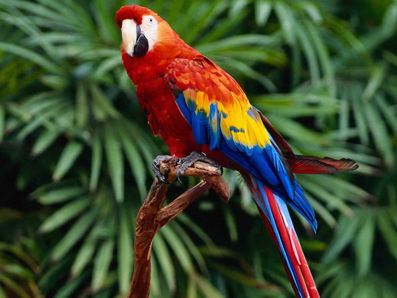

×
Halcyon smyrnesis(linnaeous,1758) (Gmelin, 1791)
white throated kingfisher
coraciformers
alcidinidate
Nleast concern
This is a large kingfisher, 27–28 cm (10.6–11.0 in) in length. The adult has a bright blue back, wings and tail. Its head, shoulders, flanks and lower belly are chestnut, and the throat and breast are white. The large bill and legs are bright red.
This is a large kingfisher, 27–28 cm (10.6–11.0 in) in length. The adult has a bright blue back, wings and tail. Its head, shoulders, flanks and lower belly are chestnut, and the throat and breast are white. The large bill and legs are bright red.
Not Available
White-throated kingfishers range from Turkey in the west to the Philippines in the east, including Afghanistan, Bangladesh, Bhutan, Cambodia, China, Egypt, India, Indonesia, Iran, Iraq, Israel, Jordan, Kuwait, Laos, Lebanon, Malaysia, Myanmar, Nepal, Pakistan, Saudi Arabia, Singapore, Sri Lanka, Syria, Taiwan, Thailand, and Vietnam